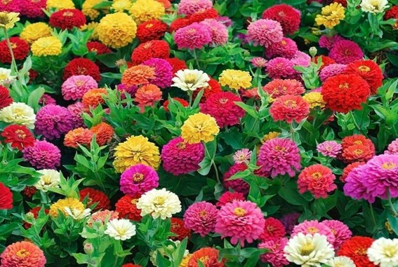

Цинния — это первый цветок, который распустился в космосе на борту МКС. Этот эксперимент стал важной вехой, хотя и не обошёлся без сложностей.
Циннию выращивали в системе Veggie — специальной установке с красными, синими и зелёными светодиодами для стимуляции роста в невесомости.
Эксперимент едва не провалился. Из-за дисбаланса системы полива и высокой влажности на листьях появилась плесень, которая угрожала не только растениям, но и экипажу в замкнутой атмосфере станции. Две циннии погибли.
Астронавт Скотт Келли срезал плесень, а над посадками установили вентилятор. Однако вентилятор пересушил растения, и Келли пришлось нарушить инструкцию — он начал поливать цветы по своему усмотрению, ориентируясь на их внешний вид, а не по расписанию с Земли. Он аргументировал это тем, что в будущих полётах на Марс экипаж должен сам принимать такие решения.
16 января 2016 года Скотт Келли опубликовал фото распустившейся оранжевой циннии с шуткой: «Да, в космосе есть и другие формы жизни!».
Именно это событие считается первым случаем цветения в космосе (хотя были и более ранние эксперименты, но именно цинния на МКС стала самой известной).